Hit Ctrl-U:
General Tag
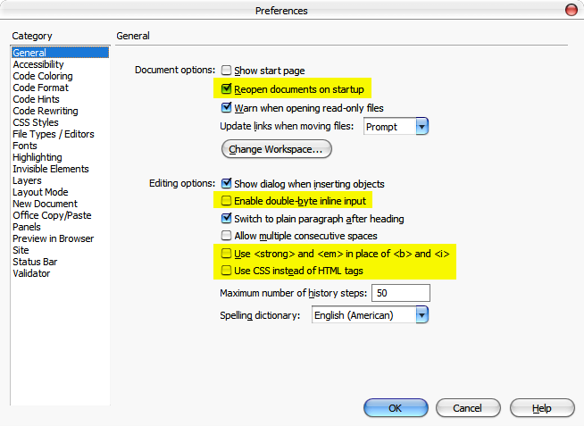
"Reopen..." means DW will automatically open "working files" in the last working session.
Check-off "Double-byte..." so that DW will work with Vietnamese typing program.
Do not use "<strong>, <em>, <css>..." means we want to use the good old day HTML coding stuff.
Code Format Tag
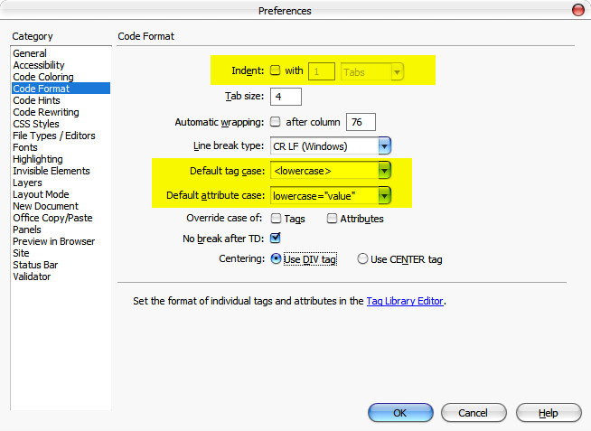
No ident, using lowercase, etc... those things are not really important, it is just the reference so that it fit the way we see the HTML code.
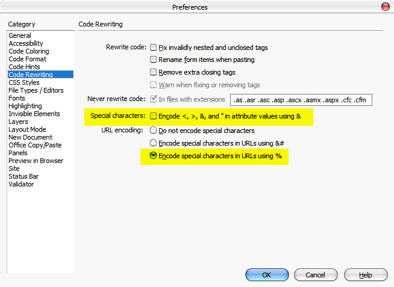
Those settings means that DW do not automatically using standard encoding, this is to avoid conflict with Vietnamese text.
File/Types/Editors Tag
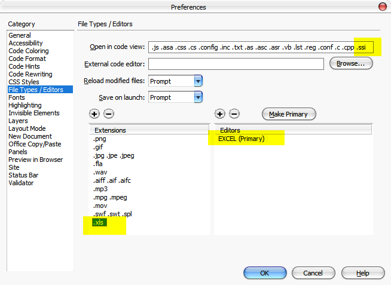
This settings tell DW to use what program to open what file. The file SSI (Server-Side Include) is actually HTML code and should be open by DW itself; while the XLS (Excel) files should be open by Excel program.
Fonts Tag
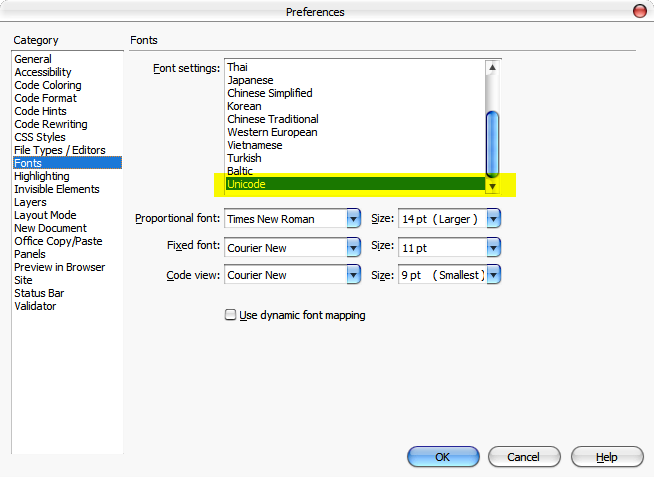
Select Fonts that we need. Check what please your eye.
Invisible Elements Tag
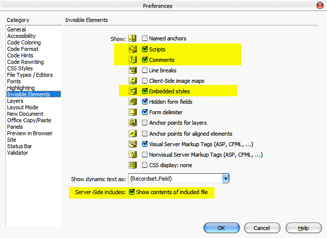
We want DW to display "Script and Comments" so that we do not accidentally delete those things.
We want DW to include those embeded stuff so that we can see things more WYSIWYG.
New Document Tag
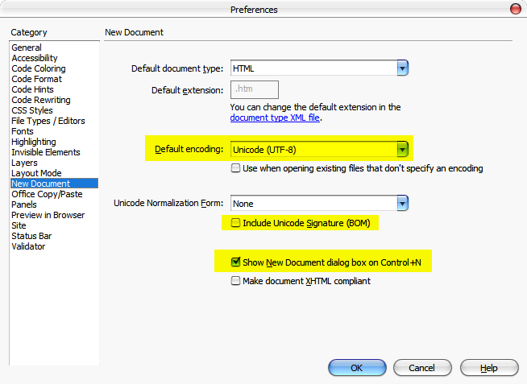
We want to use UTF-8 (Unicode) as default.
The Site Settings --for Jiuping Site-- should be accessed via the "File Pannel":
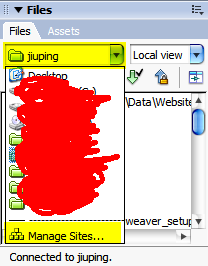
After clicking to "Manage Sites..." the following will appear:
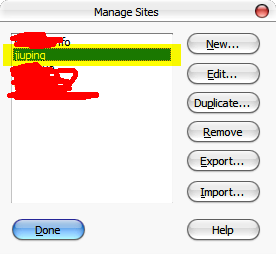
Then select the "Site" we want to manage.
We may have different sites when we manage different websites.
Then after choose the site we need:
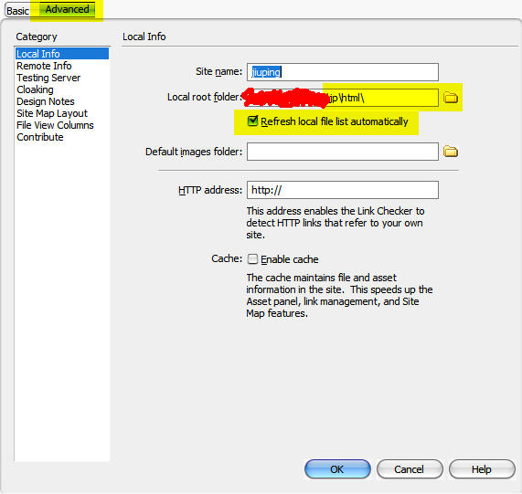
Please use "Advance" for detailed settings, not "Basic".
The local root folder MUST be the local folder that contains the stuff that match the "http://9binh.com/" (the root of the website). Failing to do so may result in incorrect URL (address) calculation. For example, we may see a picture appearing correctly at local screen, but after uploading, it's gone. It may be because at local, the URL to the picture is correct, but it won't be correct after uploading.
The remote Info:
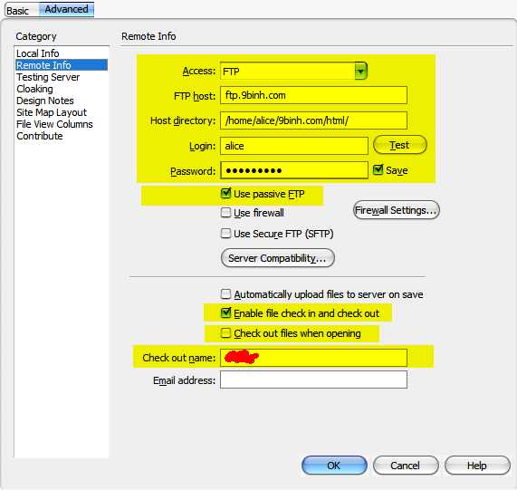
1. The "ftp" information should be correct, which is like what is displayed above.
2. We need to use "Passiwve FTP", since most of the firewall/NAT require us to do so.
3. The "Check In, Check Out" is needed to easier cooperating among people working on the same website.
4. We may not want "Check out files when opening", because the files will be "check-out" even when we just need to "view" it (read-only).
5. Put the Check-out name as your name, so that after you check a file out, other will know that you are working on it, so they do not touch the file until you finish your work and "check it in".
IMPORTAN NOTE:
Once we use "Check-in/out" way of coorperation, we have to Check files in and out using those two buttons (Check Out and Check In buttons):
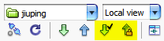
Not the "Get" and "Put" buttons:
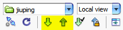
which are used when we are the only person maintaining the website.
Since we do not have testing server, we leave those things below as "none":
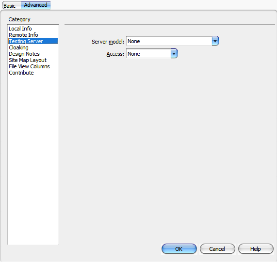
We need to exchange "Design Notes":
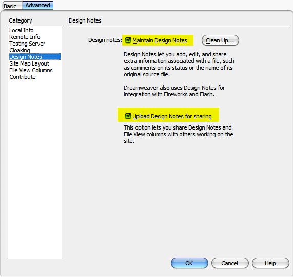
Design notes are notes that "attached" to files. For example, when a person A is working on a file and want to have a note about that, he "stick that note" to the file. If a person B want to work on that same file, he see that note when opening it, which help him to know what person A is mean to tell him.
The "templates" files --form, layout, etc,... to create pages-- are located here:
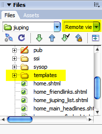
Dowdload them all to the local. If you want to make a new teamplate, then create a new one, and upload to share with others.
The Casscade Styles files --predefines about fonts, size, color,...-- are located here:
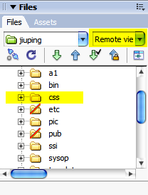
Download them all.
To create a page based on a predefined template, hit Ctrl-N:
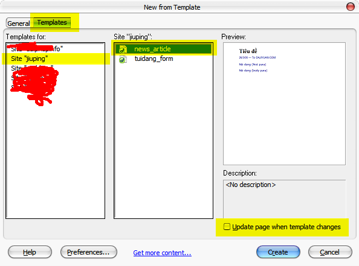
We use "our" Templates, not those General stuff offered by DreamWeaver.
We check-off "Update page when..." for easy use. If this is "check-on" then each time the template is modified, DreamWeaver will try to apply the same changed to all the pages that have created by using that particular template.
When editing a page, we may need to "sticked" to the predifine Style.
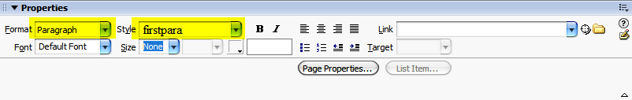By doing that way, when keep the pages of all the website having "uniform" look-and-feel.
When editing a page, we may not want to accidentally dellete those "icons" above and below.
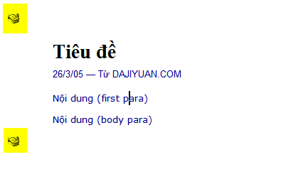
Those "icons" are actually JavaScript code that generate the proper header and footter of the page. Keeping that code make the pages we created having the same headers and footers. Using code make the headers and footters "dynamic", namely it may not be something fixed forever.
Hit Ctrl-Shift-H to see the content of the "head" HTML code:
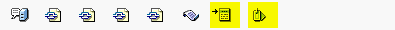
Those 2 last one are "Title" and "Editor Notes Meta Tag".
The "Title" should have the same contents as of the Title of the main body text, example:
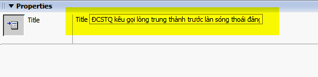
While the Editor Notes should be some information like the English/Chinese source:
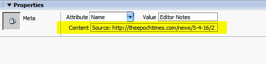
Unlike the Design Notes that we talked above --the notes kepts internally by DreamWeaver and unseen by Internet reader-- this Meta Tag can be read by the Internet technical readers when they open the HTML code to see. It is also what we want. We want to have a place so that when in need we know how to trace back to the source of information.